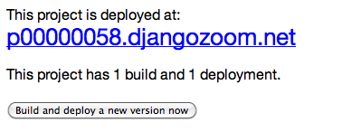

Django Polls Webapp Tutorial¶
This tutorial will look at writing and deploying a web application. The app is an online poll where visitors can view choices (a bit of text) and vote the option up and down.
We will cover local deployment as well as deploying your web application to the world, where other people can play with it, and where you can modify it.
This is based heavily on the official tutorial for the Django web programming framework as well as the Ruby on Rails for Women workshop.
If you would like to see an example of this completed tutorial, Gregg did it, Lukas did it
Part 1: If You Build It... They Will Pay You¶
The Client¶
VoteOnEverything, Ltd. (VOEL) is a web startup hoping to make some money on this “internet” thing the kids are talking about. Their idea: an app where people can easily create polls on their favorite subjects and vote on them! They are flush with cash, and have hired you (you’re smart, right?) to help out!
Example User Stories¶
- As a poll creator, it should be obvious and easy to create polls.
- As a visitor, I want stable urls so I can share my polls easily.
- As a voter, it should be easy to vote on polls!
- As VOEL, I want polls with lots of total votes to be on the front page.
- As VOEL, I want to keep track of visitor information, to sell to advertisers, including their source ip, geography, etc.
- As a user, I want the application to keep track of polls I have created, my voting history.
- (many many more)
Designing The Prototype¶
Time to make a prototype! After hearing about Python and the Django web framework from that smart woman you know who works at Google, you have decided to try it out!
Since this is a prototype, you have decided to eliminate some features (logins, history tracking, demographic information, etc.) to focus on the core applicaion: polls and voting.
The prototype will consist of two parts:
- A public site that lets people view polls and vote in them.
- An admin site that lets you add, change and delete polls.
You have decided to implement the following pages:
- Poll “index” page – displays the latest few polls.
- Poll “detail” page – displays a poll question, with no results but with a form to vote.
- Poll “results” page – displays results for a particular poll.
- Vote action – handles voting for a particular choice in a particular poll.
To support these pages, you need these abstractions (models, objects):
- Polls
- Choices
Part 2: Create your Django App¶
Goal: Configure and explore a basic Django “out of the box app”.
Create necessary directories, activate virtualenv¶
(You may have already done this!)
In your terminal, starting from somewhere reasonable (here, mydir)
# remember in bash, # means comment -- don't type these :)
cd mydir
mkdir django_projects
virtualenv --no-site-packages pystar
# New python executable in pystar/bin/python
# Installing setuptools............done.
source pystar/bin/activate # windows -> pystar\Scripts\activate.bat
# (pystar)My-MacBook-Pro:mydir $
# $ ls .
# django_projects pystar
Switch to the right directory¶
In a terminal (or GitBash), get into the django_projects directory we created in the Friday setup portion of the tutorial.
You can do that by typing this into your terminal:
cd django_projects
In the Friday setup portion of the workshop, you already saw how to use the django-admin.py command to start a project. Let’s go into it and start looking around.
django-admin.py startproject myproject # if you haven't already got a my_project
cd myproject
Look at the files¶
Let’s look at files in the project (you can ignore any .pyc files). The default Django app should look like this:
# remember, '$ ' indicates the terminal prompt, don't type it!
$ ls
__init__.py
manage.py
settings.py
urls.py
These files are:
- __init__.py: An empty file that tells Python that this directory should be considered a Python module. Because of the __init__.py file, you can use import to import myproject.
- manage.py: A command-line utility that lets you interact with this Django project in various ways. You can read all the details about manage.py in django-admin.py and manage.py.
- settings.py: Settings/configuration for this Django project. Django settings will tell you all about how settings work.
- urls.py: The URL declarations for this Django project; a “table of contents” of your Django-powered site. You can read more about URLs in URL dispatcher.
Start the Development (Local) Server¶
Verify the development server will start.
Run the command:
python manage.py runserver
Review the output in your terminal. It should look similar to:
Validating models... 0 errors found. Django version 1.2, using settings 'myproject.settings' Development server is running at http://127.0.0.1:8000/ Quit the server with CONTROL-C.
Now that the server’s running, visit http://127.0.0.1:8000/ with your Web browser. You’ll see a “Welcome to Django” page, in pleasant, light-blue pastel. It worked!

Note how mouthy this is, and that it mentions DEBUG, settings.py, and a lot more, which will be covered in later sections.
Of course, you haven't actually done any work yet. Here's what to do next: If you plan to use a database, edit the DATABASES setting in myproject/settings.py. Start your first app by running python myproject/manage.py startapp [appname]. You're seeing this message because you have DEBUG = True in your Django settings file and you haven't configured any URLs. Get to work!
Observe the logging that happens in the terminal where your server is running:
[24/Mar/2011 11:50:18] "GET / HTTP/1.1" 200 2057
which has the format:
DATE METHOD URL PROTOCOL RESPONSE_CODE CONTENTSIZE
Navigate to http://127.0.0.1:8000/some/url/. What changes in the
Exit the server
- return to the terminal instance where the development server is running
- pressing CONTROL-C on your keyboard
- VERIFY your server is shut down. How do you do this? [answer]
Experiment: These two commands are identical:
python manage.py runserver python manage.py runserver 8000
Start a server on port 8103, and navigate to it using your browser [answer].
Type python manage.py help. Speculate what some of these commands might do. cf: http://docs.djangoproject.com/en/dev/ref/django-admin/
Part 3: Save your work!¶
Before we do anything else, let’s save our work and start it with the world.
We’ll do that with git and Github. On your own computer, get to a Terminal or a GitBash.
You should have set up git and your GitHub account yesterday. If not, do it now.
cd to get into the myproject directory. If it’s a fresh Terminal, this is what you’ll do:
cd ~/django_projects/myprojectIs this new project? (It is!) So:
create a git repository in the project directory:
# in myproject git initTell git to ignore any files that end with .pyc (why? [answer]) when we push to our repo . Add an exclude rule to .git/info/exclude:
# in myproject directory gedit .git/info/exclude # add this line to the end of the file # excludes all compiled python files, which aren't interesting. .pyc
Create your project on GitHub. Go to http://github.com/ and create a new repository called “myproject”. On the main dashboard page, click on “New Repository” fill out the necessary information. cf: http://help.github.com/create-a-repo/.
Check the status of your files. At this point:
(pystar2)Gregg-Linds-MacBook-Pro:myproject gregg$ git status # On branch master # # Initial commit # # Untracked files: # (use "git add <file>..." to include in what will be committed) # # __init__.py # manage.py # settings.py # urls.py nothing added to commit but untracked files present (use "git add" to track)
None of the files are tracked. That is, git doesn’t know about them!
Add one file git add manage.py. POP QUIZ: What does git status say now?
Add all your files to the repo, in the local directory:
git add *.py # all .py files, using a wildcard match.Now git is aware of your files. Use git status to see them there in the staging area (the index).
git commit to commit those files:
# -m -> what is the 'message' for the commit git commit -m "Initial commit of django project from the PyStar workshop"
Look at your changes with git log to see your history. Is your commit message there?
Connect the remote github repo to your local one, and use git push to push those up to your Github repository (putting your user name and project title in the appropriate slots):
git remote add origin git@github.com:myusername/myproject.git git push origin master
Go to your Github account in your browser. Find the myproject repository. Do you see your files?
Remember:
- “commit your work” means “add and commit it to the local repository
- “push your work” means “git push it to github”
Part 4: Configure your Django Project¶
Now that we have a the scaffolding for our project in place, we can get to work! It needs to be configured.
Fix security settings¶
Right now, everyone in the workshop has the same “SECRET_KEY”. Since Django uses this key for various sensitive things, you should change it.
Open settings.py in your editor. settings.py is a Python script that only contains variable definitions. Django looks at the values of these variables when it runs your web app.
Find the variable named SECRET_KEY and set it to whatever string you want.
Verify it looks something like:
# change this to something arbitrary. SECRET_KEY = '6yl8d1u0+ogcz!0@3_%au)_&ty$%1jcs2hy-!&v&vv2#@pq^(h'
How would we put a single-quote (‘) in our SECRET_KEY? [answer]
save the file.
git add and commit it:
Set up the Database¶
Keep looking at settings.py: The DATABASES variable is a dictionary (note the ‘{}’ characters) with one key: default.
DATABASES = { 'default': { 'ENGINE': 'django.db.backends.', # Add 'postgresql_psycopg2', 'postgresql', 'mysql', 'sqlite3' or 'oracle'. 'NAME': '', # Or path to database file if using sqlite3. 'USER': '', # Not used with sqlite3. 'PASSWORD': '', # Not used with sqlite3. 'HOST': '', # Set to empty string for 127.0.0.1. Not used with sqlite3. 'PORT': '', # Set to empty string for default. Not used with sqlite3. } }
Notice that the value of default is itself another dictionary with information about the site’s default database. We’re going to set our app to use a sqlite database. Sqlite is great for development because is stores its data in one normal file on your system and therefore is really simple to move around with your app.
Note
In production, Sqlite has issues because only one process can write to it as a time. Discuss the implications of this with your group. [answer]
Edit the lines in your settings.py to match the lines below:
'ENGINE': 'django.db.backends.sqlite3', # Add 'postgresql_psycopg2', 'postgresql', 'mysql', 'sqlite3' or 'oracle'. 'NAME': 'database.db',
The NAME key tells the Django project to use a file called database.db to store information for this project.
Pop quiz: Does database.db exist right now? Find out! [answer]
Notice the INSTALLED_APPS setting towards the bottom of the settings.py. That variable (a tuple... note the ‘()’ symbols) holds the names of all Django applications that are activated in this Django instance. Apps can be used in multiple projects, and you can package and distribute them for use by others in their projects.
INSTALLED_APPS = ( 'django.contrib.auth', 'django.contrib.contenttypes', 'django.contrib.sessions', 'django.contrib.sites', 'django.contrib.messages', # Uncomment the next line to enable the admin: # 'django.contrib.admin', # Uncomment the next line to enable admin documentation: # 'django.contrib.admindocs', )
What do you think these various apps do? Why does it make sense for them to come in a standard configuration? [answer]
Each of these applications makes use of at least one database table, so we need to create the tables in the database before we can use them. To do that, run the following command:
python manage.py syncdb
The syncdb command looks at the INSTALLED_APPS setting and creates any necessary database tables according to the database settings in your settings.py file. You’ll see a message for each database table it creates.
When prompted, you’ll get a prompt asking you if you’d like to create a superuser account for the authentication system. Say yes! Use ‘super’ as your password:
You just installed Django's auth system, which means you don't have any superusers defined. Would you like to create one now? (yes/no): yes Username (Leave blank to use 'barack'): super E-mail address: example@example.com Password: Password (again): Superuser created successfully. Installing index for auth.Permission model Installing index for auth.Group_permissions model Installing index for auth.User_user_permissions model Installing index for auth.User_groups model Installing index for auth.Message model Installing index for polls.Choice model No fixtures found.
Does this seem magical? [answer]
Pop quiz: Does database.db exist right now? Find out! [answer]
Save and commit your work (don’t save database.db – why not? [answer]):
git status # will show settings.py is changed, and a new 'untracked' # MacBook-Pro:myproject gregg$ git status # On branch master # Changed but not updated: # (use "git add <file>..." to update what will be committed) # (use "git checkout -- <file>..." to discard changes in working directory) # # modified: settings.py # # Untracked files: # (use "git add <file>..." to include in what will be committed) # # database.db # file 'database.db'
Drink some tea and take a stretch break. Then we can come back to STRETCHING OUR MINDS.
Part 5: In Which You Save You From Yourself, Using Git.¶
Your work is saved and commited (in git!) right?
Right? How do you know? [answer]
Good. Because you got a case of the accidental deletes and you’ve deleted your settings.py file!
No really. Go and delete settings.py. Throw it in the trash. Or the recycling bin. Or rm from the command line. Make sure it’s really gone using ls.
Try running your dev server. What happens? Why?
Delete settings.pyc. Try running your dev server. What happens now? Why? [answer]
Cry! So they’re gone right? No way back. And everything’s broken!
Rejoice! Because we’re using version control and version control is about to save your bacon!
$ git checkout settings.pyLook at your project folder again, using ls. Lo and behold, settings.py! Back from beyond the grave! Cool, huh? Open it up, and verify it is exactly as you left it. Isn’t that magical? [answer].
But what of settings.pyc? Start your dev server. It works, right? Stop your dev server and look at the files in your project. Do you see settings.pyc? How did it get there? [answer]
Part 6: Build The Polls Application¶
Now that your environment – a “project” – is set up, you’re set to start building the poll application.
Each application you write in Django consists of a Python package, somewhere on your Python path, that follows a certain convention. Django comes with a utility that automatically generates the basic directory structure of an app (that Django expects), so you can focus on writing code!.
Projects and Apps¶
We’ve talked a little about Django apps and projects. You might be wondering what the difference is.
Here are the things to know:
An app is component of a website that does something. For example, the Django administration app is something you’ll see later in this tutorial. So is our polls app. An app is:
- single purpose - login, passwords, polls, forum, etc.
- orthonogal to / independent of other apps - polls shouldn’t have to know the inside details of authentication, for example.
A project corresponds to a ‘website’: it contains a settings.py file, and it may have corresponding databases or other data stores that the apps interact with.
Django apps can live anywhere on the Python path. The python path is a list of paths where the python interpreter looks for modules.
$ python
>>> import sys
>>> sys.path
['', '/Users/gregg/mydir/pystar/lib/python2.6/site-packages/setuptools-0.6c11-py2.6.egg',
'/Users/gregg/mydir/pystar/lib/python2.6/site-packages/pip-0.8.3-py2.6.egg',
'/Users/gregg/mydir/pystar/lib/python26.zip',
'/Users/gregg/mydir/pystar/lib/python2.6',
'/Users/gregg/mydir/pystar/lib/python2.6/plat-darwin',
'/Users/gregg/mydir/pystar/lib/python2.6/plat-mac' ... ]
To be importable (seeable by Python), your Django app must be in one of the folders on your path.
Experiment: look at your Python Path!
Create The Poll App¶
In this tutorial, we’ll create our poll app in the myproject directory for simplicity. In the future, when you decide that the world needs to be able to use your poll app and plug it into their own projects, and after you determine that your app plays nicely with other apps, you can publish that directory separately!
open your terminal and navigate to myproject
make scaffolding for the app
python manage.py startapp polls
That’ll create a directory polls to house the poll application.
Verify what is new.
git status # should show 'polls/' in 'untracked'While were are here lets make git ignore ‘database.db’ by adding database.db to .git/info/exclude. Verify (using ‘git status’) that is it gone.
Examine the layout of polls (we will do more of this in following sections).
# remember not to type the '$', it just means the prompt'. $ ls polls polls/ __init__.py models.py tests.py views.py
Prove that polls is importable [answer]
Add and commit polls/*py.
Install the polls app into the project. Edit the settings.py file again, and change the INSTALLED_APPS setting to include the string ‘polls’ as the last entry. [answer]
Save and commit the settings.py file.
Refill your tea!
Part 7: Test your Django Project¶
Run the default Django tests
python manage.py testExamine the output. If there are errors, what are they? [answer]
Run the tests for the polls application
python manage.py test pollsYou should get output like:
$ python manage.py test polls Creating test database for alias 'default'... . ---------------------------------------------------------------------- Ran 1 test in 0.001s OK Destroying test database for alias 'default'...
Make it louder! Run python manage.py test polls -v 2 and see that it now names the test –> test_basic_addition (polls.tests.SimpleTest). ‘-v’ is for verbosity, and (here) can be 0,1,2,3.
View polls/test.py, and see the example test.
Copy :download:`test_polls.py <https://github.com/lsblakk/pystar/raw/master/docs/test_polls.py>`_ and move it into polls directory
Edit polls to include the tests from test_polls.py to look like:
from django.test import TestCase from test_polls import *
Add it into your project code git repo:
git add polls/tests.py polls/test_polls.py git commit -m "added tests"Examine test_polls.py in your editor. This file (provided by us) gives acceptance tests for many of the points on the original spec sheet. Normally this is the sort of thing you would write yourself, after reading your spec, and deciding on acceptence criteria. We done it here to help you along, and provide an example for your work in the future!
Writing good tests is hard!
Re-run your tests. python manage.py test polls. Note that most fail! (We will assume that the django tests all pass and focus on testing the polls tests, from here on out.)
Discuss with your groups why testing matters. [answer]
We will return to testing throughout this document as we add new features. We are done when all the tests pass!
Further research: http://docs.djangoproject.com/en/dev/topics/testing/, which goes into this in much greater detail.
test yourface: Take your eyes off the screen, and make some funny faces.
Part 8: Refine Your Workflow!¶
When developing, this is a good work flow.
- Design a feature, with criteria for acceptance.
- Test your feature, to see if meets those criteria.
- When it works (or you make good progress), commit your work.
We will use this workflow throughout the following sections, as we add the features that our protype spec outlined.
Part 9: Philosphy Break!¶
In the following sections, there will be Django Philosophy breaks to highlight major ideas of the Django framework. Other web frameworks might make these choices or use these terms differently. Who is right? [answer]
Part 10: Mockups, Views, and URLs¶
Django-Philosophy
A view is a “type” of Web page in your Django application that generally serves a specific task and has a specific associated template.
In a Blog application, you might have the following views:
- Blog homepage – displays the latest few entries.
- Entry “detail” page – permalink page for a single entry.
- Year-based archive page – displays all months with entries in the given year.
- Month-based archive page – displays all days with entries in the given month.
- Day-based archive page – displays all entries in the given day.
- Comment action – handles posting comments to a given entry.
In our poll application, we’ll have the following four views:
- Poll “index” page – displays the latest few polls.
- Poll “detail” page – displays a poll question, with no results but with a form to vote.
- Poll “results” page – displays results for a particular poll.
- Vote action – handles voting for a particular choice in a particular poll.
In Django, each view is represented by a Python function.
Design your URLs¶
The first step of writing views is to design your URL structure. You do this by creating a Python module, called a URLconf. URLconfs are how Django associates a given URL with given Python code.
When a user requests a Django-powered page, the system looks at the ROOT_URLCONF setting, which contains a string in Python dotted syntax.
Pop quiz: what is the ROOT_URLCONF for your project? [answer]
Django loads that module and looks for a module-level variable called urlpatterns, which is a sequence of tuples in the following format:
(regular expression, Python callback function [, optional dictionary])
Django starts at the first regular expression and makes its way down the list, comparing the requested URL against each regular expression until it finds one that matches.
You might ask, “What’s a regular expression?” Regular expressions are patterns for matching text. In this case, we’re matching the URLs people go to, and using regular expressions to match whole ‘groups’ of them at once.
(If you’d like to learn more about regular expressions read the Dive into Python guide to regular expressions sometime. Or you can look at this xkcd.)
In addition to matching text, regular expressions can capture text. Capturing means to remember that part of the string, for later use. Regexps (or Regexen) use parentheses () to wrap the parts they’re capturing.
For Django, when a regular expression matches the URL that a web surfer requests, Django extracts the captured values and passes them to a function of your choosing. This is the role of the callback function above. When a regular expression matches the url, Django calls the associated callback function with any captured parts as parameters. This will much clearer after the next section.
Add URLs to urls.py¶
When we ran django-admin.py startproject myproject to create the project, Django created a default URLconf. Take a look at settings.py for this line:
ROOT_URLCONF = 'myproject.urls'
That means that the default URLconf is myproject/urls.py.
Write our URL mapping. Edit the file myproject/urls.py so it looks like this:
urlpatterns = patterns('', (r'^polls/$', 'polls.views.index'), (r'^polls/(\d+)/$', 'polls.views.detail'), (r'^polls/(\d+)/results/$', 'polls.views.results'), (r'^polls/(\d+)/vote/$', 'polls.views.vote'), # Examples: # url(r'^$', 'myproject.views.home', name='home'), # url(r'^myproject/', include('myproject.foo.urls')), # Uncomment the admin/doc line below to enable admin documentation: # url(r'^admin/doc/', include('django.contrib.admindocs.urls')), # Uncomment the next line to enable the admin: # url(r'^admin/', include(admin.site.urls)), )
POP QUIZ, suppose a visitor goes to http://127.0.0.1:8000/polls/23/results/ ,
- which regex pattern is tripped?
- what function is then called?
- what arguments is that function called with?
- [answer]
Save urls.py.
Start the dev server and try that url out! What happens?
Re-run the test suite python manage.py test polls. What parts (if any) pass now that didn’t before? You should be seeing lots of “ViewDoesNotExist” messages. (We will create them in the next section. The tests will much more sensible after that!
Save and commit.
Review: When somebody requests a page from your Web site – say, “/polls/23/”, Django will load the urls.py Python module, because it’s pointed to by the ROOT_URLCONF setting. It finds the variable named urlpatterns and traverses the regular expressions in order. When it finds a regular expression that matches – r'^polls/(\d+)/$' – it loads the function detail() from polls/views.py. Finally, it calls that module’s detail() function like so:
detail(request=<HttpRequest object>, '23')
The ‘23’ part comes from (\d+). Using parentheses around a pattern “captures” the text matched by that pattern and sends it as an argument to the view function; the \d+ is a regular expression to match a sequence of digits (i.e., a number).
Does this seem magical? [answer] Actually, this is less magical than some other parts of Django! Regular Expressions, though sometimes cryptic, are a pretty common and useful skill among developers.
The idea that a URL doesn’t have to map onto a file, or some other sort of static resource, is quite powerful. The URL is just a way of giving instructions to some server, somewhere.
(Rant: In Django, as in most modern frameworks, you have total control over the way your URLs look. People on the web won’t see cruft like .py or .php at the end of your URLs. There is no excuse for that kind of stuff in the modern era!)
Exercise: Think about another hypothetical website, “MyMagicToa.st”, in which you use a virtual toaster. What might some actions and (and associated urls) be for interacting with it?
Write Some Views!¶
Start the development server: python manage.py runserver
Fetch “http://127.0.0.1:8000/polls/” in your browser. You should get a pleasantly-colored error page with the following message:
ViewDoesNotExist at /polls/ Tried index in module polls.views. Error was: 'module' object has no attribute 'index'
Recall this line (r'^polls/$', 'polls.views.index').
Explore this using your django-shell: python manage.py shell
>>> import polls # imports fine! >>> import polls.views # imports fine also! polls/views.py >>> dir(polls.views) # what is in there! >>> 'index' in dir(polls.views) False >>> import inspect >>> inspect.getsourcefile(polls.views) # something like '/Users/adalovelace/gits/myproject/polls/views.py'
So, a mystery? Where is the view!? It’s nowhere! The URL parsing is going fine, but there is no one listening at the other end of the phone! This ViewDoesNotExist error happened because you haven’t written a function index() in the module polls/views.py.
Try http://127.0.0.1:8000/polls/23/, http://127.0.0.1:8000/polls/23/results/ and http://127.0.0.1:8000/polls/23/vote/, and you will see similar messages. The error messages tell you which view Django tried (and failed to find, because you haven’t written any views yet).
Write some views. Open polls/views.py and put the following Python code in it:
from django.http import HttpResponse def index(request): return HttpResponse("Hello, world. You're at the poll index.")
This is a very simple view.
Save the views.py file, then go to http://127.0.0.1:8000/polls/ in your browser, and you should see that text.
RE-RUN YOUR TESTS. POP QUIZ. Do more pass?
Add a few more views by adding to the views.py file. These views are slightly different, because they take an argument (which, remember, is passed in from whatever was captured by the regular expression in the URLconf):
# recall or note that %s means, "subsitute in a string" def detail(request, poll_id): return HttpResponse("You're looking at poll %s." % (poll_id,)) def results(request, poll_id): return HttpResponse("You're looking at the results of poll %s." % (poll_id,)) def vote(request, poll_id): return HttpResponse("You're voting on poll %s." % (poll_id,))
Save views.py.
Navigate to http://127.0.0.1:8000/polls/34/. It’ll run the detail() method and display whatever ID you provide in the URL. Try http://127.0.0.1:8000/polls/34/results/ and http://127.0.0.1:8000/polls/34/vote/ too – these will display the placeholder results and voting pages.
Add a little html to the ‘results’ view. Wrap the poll_id in <strong> </strong> tags and verify that the view is indeed bold!
RE-RUN YOUR TESTS. POP QUIZ. Which ones now pass?
Add and commit your code. Remember to write a good commit message that mentioned what changed (in English) and more details below. Mention which tests now pass (hint, they are ‘reachability’ tests!)
Mockery, Mockery¶
These views don’t plug into real polls. This is by design.
- front-end (visual) and back-end (data) can happen simulatenously
- demonstrating the UI of the product shouldn’t rely on having full data in the back end.
All of this relies on the frontend and backend having a concensus view of the interface between them. What does a ‘Poll’ look like? What data and methods might it have? If we knew this, we could construct mock objects and work with them, instead! Keeping objects simple makes writing interfaces between different layers of the application stack easier.
We will come back to templates (and use Django’s build-in templating facilities rather than simple python string formatting) after we build some models.
Part 11: Showing Off!¶
Time to show our work to the world. To do this, we are going to use DjangoZoom, a fairly new site that makes doing remote deployment easy! It’s still in beta, and we are going to be guinea pigs for them!
Push your code to github
Go to: http://djangozoom.com/dz2/dashboard/
Login with the credentials given in class.
Enter your GitHub url.

Rename your project.

Navigate to the URL you eventually get, like http://p00000058.djangozoom.net/.
OHNOES! There is no slash (root) view!

See that ‘/polls/’ looks just like how it does on your local machine.
Fix that locally!
in urls.py add:
urlpatterns = patterns('', (r'^$', 'polls.views.redirect_to_polls'), (r'^polls/$', 'polls.views.index'),
in polls/views.py:
from django.http import HttpResponseRedirect def redirect_to_polls(request): return HttpResponseRedirect('/polls/')
Restart your local server, and hit http://127.0.0.1/ . What happened? Look at your logging:
[24/Mar/2011 15:01:15] "GET / HTTP/1.1" 302 0 [24/Mar/2011 15:01:15] "GET /polls/ HTTP/1.1" 200 39
See the ‘302’? By returning a HttpResponseRedirect, you redirected the user to a different page! Learn more about status codes at http://en.wikipedia.org/wiki/List_of_HTTP_status_codes .
Commit and push your changes.
Return to DjangoZoom and rebuild.
Your redeployed site should have a sensible ‘/’ (that redirects to /polls).
Takeaways:
- pushing to remote location exposed that having the ‘/’ behaviour unspecified is a little ugly. This should be added to the spec.
- redirects can hide a multitude of sins. If you are used to Apache ModRewrite, doing it from right in your framework can be a lot easier!
Part 12: Poll and Choice Models¶
Remember those files from Create The Poll App above? We have worked with views.py and test.py. Let’s tackle models.py next and make some actual data for our views to see!
Django-Philosophy
A model is the single, definitive source of data about your data. It contains the essential fields and behaviors of the data you’re storing. Django follows the DRY (“Don’t Repeat Yourself”) Principle. The goal is to define your data model in one place and automatically derive things from it.
(If you’ve used SQL before, you might be interested to know that each Django model corresponds to a SQL table. This simple correspondence between models and tables is a design choice, and not everyone likes it. [discussion])
In our simple poll app, we’ll create two models: Polls and Choices. As per our spec from the customer:
A poll has:
- a question
- a publication date.
A choice has two fields:
- the text of the choice
- a vote tally.
Each Choice is associated with a Poll and each Poll has associated Choices. We will respesent these concepts with python classes derived from django.db.models.
Edit the polls/models.py file so it looks like this:
from django.db import models class Poll(models.Model): question = models.CharField(max_length=200) pub_date = models.DateTimeField() class Choice(models.Model): poll = models.ForeignKey(Poll) choice = models.CharField(max_length=200) votes = models.IntegerField()
Save the models.py file.
All models in Django code are represented by a class that subclasses django.db.models.Model. Each model has a number of class variables, each of which represents a database field in the model. (cf: http://docs.djangoproject.com/en/dev/topics/db/models/)
Each field is represented by an instance of a Field class – e.g., CharField for character fields and DateTimeField for datetimes. This tells Django what type of data each field holds.
The name of each Field instance (e.g. question or pub_date) is the field’s name, in machine-friendly format. You’ll use this value in your Python code, and your database will use it as the column name.
Some Field classes have required elements. CharField, for example, requires that you give it a max_length. That’s used not only in the database schema, but in validation, as we’ll soon see.
Finally, note a relationship is defined, using ForeignKey. That tells Django each Choice is related to a single Poll. Django supports all the common database relationships: many-to-ones, many-to-manys and one-to-ones.
Activate The Models¶
models.py gives Django a lot of information. With it, Django is able to:
- Create a database schema (CREATE TABLE statements) for this app.
- Create a Python database-access API for accessing Poll and Choice objects.
But first we need to tell our project that the polls app is installed.
- Verify that settings.py has polls as part of the INSTALLED_APPS. [answer]
Commit!¶
Add and commit all your work.
Syncronise the Database¶
Now Django knows to include the polls app.
Examine the SQL produced by the following command:
python manage.py sql polls
Create the tables for the polls app.
python manage.py syncdb
The syncdb looks for apps that have not yet been set up. To set them up, it runs the necessary SQL commands against your database. This creates all the tables, initial data and indexes for any apps you have added to your project since the last time you ran syncdb. syncdb can be called as often as you like, and it will only ever create the tables that don’t exist.
More info: Read the django-admin.py documentation for full information on what the manage.py utility can do.
Explore The Api¶
Now, let’s hop into the interactive Python shell and play around with the free API Django gives you. To invoke the Python shell, use this command:
python manage.py shell
We’re using this instead of simply typing “python”, because manage.py sets up the project’s environment for you. “Setting up the environment” involves two things:
- Making sure polls is on the right path to be imported.
- Setting the DJANGO_SETTINGS_MODULE environment variable, which gives Django the path to your settings.py file.
Once you’re in the shell, explore the database API:
import the model classes we just wrote:
>>> from polls.models import Poll, Choice
list all the current Polls:
>>> Poll.objects.all() []
How many polls is this?
Zen koan: Can there be a Choice for a Poll that doesn’t yet exist?
Add a Poll.
>>> import datetime >>> p = Poll(question="What is the Weirdest Cookbook Ever?", pub_date=datetime.datetime.now())
Save the Poll instance into the database. You have to call save() explicitly.
>>> p.save()
Get the id of the Poll instance. Because it’s been saved, it has an ID in the database
>>> p.id 1
What other methods and attributes does this Poll instance have?
>>> dir(p) >>> help(p)
Access the database columns (Fields, in Django parlance) as Python attributes:
>>> p.question "What is the Weirdest Cookbook Ever?" >>> p.pub_date datetime.datetime(2007, 7, 15, 12, 00, 53)
Send the Poll back in time:
# Change values by changing the attributes, then calling save(). >>> p.pub_date = datetime.datetime(2007, 4, 1, 0, 0) >>> p.save() >>> p.pub_date datetime.datetime(2007, 4, 1, 0, 0)
Ask Django to show a list of all the Poll objects available:
>>> Poll.objects.all() [<Poll: Poll object>]
Fix The Hideous Default Representation¶
Wait a minute! <Poll: Poll object> is an utterly unhelpful, truly wretched, beyond comtemptable representation of this object. Let’s fix that by editing the Polls model. Use your text editor to open the polls/models.py file and adding a __unicode__() method to both Poll and Choice:
class Poll(models.Model):
# ...
def __unicode__(self):
return self.question
class Choice(models.Model):
# ...
def __unicode__(self):
return self.choice
It’s important to add __unicode__() methods to your models, not only for your own sanity when dealing with the interactive prompt, but also because objects’ representations are used throughout Django’s automatically-generated admin.
(If you’re using to Python programming from a time in the past, you might have seen __str__(). Django prefers you use __unicode__() instead.)
Enough of these normal python methods!
import datetime # ... class Poll(models.Model): # ... def was_published_today(self): return self.pub_date.date() == datetime.date.today()
Note the addition of import datetime to reference Python’s standard datetime module. This allows us to use the datetime library module in models.py by calling it with datetime. To see what functions come with a module, you can test it in the interactive shell:
>>> dir(datetime) ['MAXYEAR', 'MINYEAR', '__doc__', '__file__', '__name__', '__package__', 'date', 'datetime', 'datetime_CAPI', 'time', 'timedelta', 'tzinfo']
Save these changes to the models.py file
Start a new Python interactive shell by running python manage.py shell:
>>> from polls.models import Poll, Choice
Verify our __unicode__() addition worked:
>>> Poll.objects.all() [<Poll: What is the Weirdest Cookbook Ever?>]
Search your database using the filter method on the objects attribute of Poll.
>>> polls = Poll.objects.filter(question="What is the Weirdest Cookbook Ever?") >>> polls [<Poll: What is the Weirdest Cookbook Ever?>] >>> polls[0].id # remember python lists start with element 0. 1
If you try to search for a poll that does not exist, filter will give you the empty list. The get method will always return one hit, or raise an exception.
>>> Poll.objects.filter(question="What is the Weirdest Cookbook Ever?") [] >>> Poll.objects.get(id=1) <Poll: What is the Weirdest Cookbook Ever?> >>> Poll.objects.get(id=2) Traceback (most recent call last): ... DoesNotExist: Poll matching query does not exist.
Add Choices¶
Observe, there is a Poll in the database, but it has no Choices.
>>> p = Poll.objects.get(id=1) >>> p.choice_set.all() []
Create three choices:
>>> p.choice_set.create(choice='To Serve Man', votes=0) <Choice: To Serve Man> >>> p.choice_set.create(choice='The Original Road Kill Cookbook', votes=0) <Choice: The Original Road Kill Cookbook> >>> c = p.choice_set.create(choice='Mini-Mart A La Carte', votes=0) >>> c <Choice: Mini-Mart A La Carte>
Go in reverse! Find the poll a particular choice belongs to:
>>> c.poll <Poll: What is the Weirdest Cookbook Ever?>
Because a Poll can have more than one Choice, Django creates the choice_set attribute on each Poll. You can use that to look at the list of available Choices, or to create them.
>>> p.choice_set.all() [<Choice: To Serve Man>, <Choice: The Original Road Kill Cookbook>, <Choice: Mini-Mart A La Carte>] >>> p.choice_set.count() 3
No really. Can one be a Choice for a Poll that doesn’t yet exist?:
>>> koan = choice("Is this even a choice") >>> koan.poll_id >>> koan.poll
Heavy Metal Polling!¶
Paste this block of code into a separate file, run python manage.py shell, import and run this block of TOTALLY METAL CODE:
import datetime import random from polls.models import Choice,Poll opinions = ['HEINOUS!', 'suxxors', 'rulez!', 'AWESOME!', 'righTEOUS', 'HAVE MY BABY!!!!', 'BEYOND METAL','SUCKS','RULES', 'TOTALLY RULES'] band_names = ''' Abonos Meshuggah Xasthur Silencer Fintroll Beherit Basilisk Cryptopsy Tvangeste Weakling Anabantha Behemoth Moonsorrow Morgoth Nattefrost Aggaloch Enthroned Korpiklaani Nile Summoning Nocturnia Smothered Scatered Summoning Wyrd Amesoeurs Solstafi Helrunar Vargnatt Agrypnie Wyrd Agrypnie Blodsrit Burzum Chaostar Decadence Bathory Leviathan Hellraiser Mayhem Katharsis Helheim Agalloch Therion Windir Ragnarok Arckanum Durdkh Emperor Sulphur Tsjuder Ulver Marduk Luror Edguy Enslaved Epica Gorgoroth Gothminister Immortal Isengard Kamelot Kataklysm Kreator Maras Megadeath Metallica Moonspell Morgul Morok Morphia Necrophagist Opeth Origin Pantera Pestilence Putrefy Vader Runenblut Possessed Sanatorium Profanum Satyricon Antichrist Sepultura Eluveitie Altare Gallhammer Sirenia Slavland Krada Tribulation Venom ObituarObituarObituarObituarObituarObituarismember Vomitory Suffocation Taake Testament ToDieFor Unleashed'''.strip().split() def make_metal_poll(bandname,opinions): pub = datetime.datetime.now() marks = '?' * random.randint(1,5) question = bandname + marks chosen = random.sample(opinions,5) choices = list() for c in chosen: votes = random.randint(1,1000) choices.append(Choice(choice=c,votes=votes)) p = Poll(question=question,pub_date=pub) p.save() p.choice_set=choices return p polls = [make_metal_poll(band,opinions) for band in band_names]
Discuss what this code does!
Test the Models¶
- Save your changes, and Re-run your tests. What now passes?
Explore the data!¶
Poke the database directly, using Python:
>>> import sqlite3 >>> db = sqlite3.connect('database.db') >>> sorted(list(db.execute('select name from sqlite_master'))) >>> sorted(list(db.execute('select * from polls_choice')))
Save and commit¶
You know the drill!
Forget about databases for now!¶
- Did you eat lunch yet?
- Maybe it’s time for a snack?
Part 13: Write Views With Power¶
In Django, each view is responsible for doing one of two things: returning an HttpResponse object containing the content for the requested page, or raise-ing an exception such as Http404. What happens between Request and Response? [Magic!].
Your view can read records from a database, or not. It can use a template system such as Django’s – or not. It can generate a PDF file, output XML, create a ZIP file on the fly, anything you want, using whatever Python libraries you want.
All Django wants is that at the end, it gets an HttpResponse or an exception.
Most of the Django views in the world use Django’s own database API, which was touched on in the discuss of models. (Sorry, I guess we can’t forget about databases quite yet!)
Construct a better index() view. To match the spec, it should displays the latest 5 poll questions in the system, separated by commas, according to publication date.
Edit views.py:
from polls.models import Poll from django.http import HttpResponse def index(request): latest_poll_list = Poll.objects.all().order_by('-pub_date')[:5] output = ', '.join([p.question for p in latest_poll_list]) return HttpResponse(output)
Restart the dev server, and navigate to http://127.0.0.1:8000/polls/. You should see the text of the last 5 HEAVY METAL polls. There’s a problem here, though: The page’s design is hard-coded in the view. If you want to change the way the page looks, you’ll have to edit this Python code.
Use Django’s template system to separate the design from Python:
from django.shortcuts import render_to_response from polls.models import Poll def index(request): latest_poll_list = Poll.objects.all().order_by('-pub_date')[:5] context = {'latest_poll_list': latest_poll_list} return render_to_response('polls/index.html', context)
To recap what this does:
- Creates a variable called latest_poll_list. Django queries the database for all Poll objects, ordered by pub_date with most recent first, and uses slicing to get the first five.
- Creates a variable called context that is a dictionary with one key.
- Evaluates the render_to_response function with two arguments, and returns whatever that returns.
render_to_response loads the template called polls/index.html and passes it a value as context. The context is a dictionary mapping template variable names to Python objects.
If you can read this this view function without being overwhelmed, then you understand the basics of Django views. Now is a good time to reflect and make sure you do.
- What would you have to change to get 10 polls?
- What if you wanted the first 10 by name?
Reload http://127.0.0.1:8000/polls/. Now you’ll see an error:
TemplateDoesNotExist at /polls/ polls/index.html
Ah. There’s no template yet. Let’s make one.
Make a polls/templates/poll directory where templates will live. Right alongside the views.py for the polls app. This is what I would do:
mkdir -p polls/templates/polls
Edit polls/templates/polls/index.html to contain.
{% if latest_poll_list %} <ul> {% for poll in latest_poll_list %} <li><a href="/polls/{{ poll.id }}/">{{ poll.question }}</a></li> {% endfor %} </ul> {% else %} <p>No polls are available.</p> {% endif %}Reload http://127.0.0.1:8000/polls/ . You should see a bulleted-list containing some of the HEAVY METAL POLLS. There should also be link pointing to the poll’s detail page.
RE-RUN your tests. Save and Commit.
Fix The Detail View and Handle User Errors using a 404¶
Now, let’s tackle the poll detail view – the page that displays the question for a given poll.
Edit the views.py file. This view uses Python exceptions:
from django.http import Http404 # ... def detail(request, poll_id): try: p = Poll.objects.get(id=poll_id) except Poll.DoesNotExist: raise Http404 return render_to_response('polls/detail.html', {'poll': p})
Notice that view raises the Http404 exception if a poll with the requested ID doesn’t exist.
Create polls/templates/polls/detail.html with:
{{ poll }}Verify your “detail” view works. Try it: http://127.0.0.1:8000/polls/1/
Re-run your tests. Note that we get in, we get a pesky TemplateDoesNotExist: 404.html message. Let’s fix that!
Create polls/templates/404.html (the polls template root dir) as:
<p>You have a 404. Go back and try again.</p>
Save and commit.
Load a poll page that does not exist, to test out the pretty 404 error: http://127.0.0.1:8000/polls/100000000000/
- What? It says DEBUG has to be False? All right, set it, and try again!
- (note: Chrome ‘eats’ the 404. Safari will show our created page.)
- Change DEBUG back to True
- Re-run the tests, and show the TemplateDoesNotExist: 404.html goes away.
- Save and commit.
Discussion: raising a 404 here (Page Not Found) is meant to be illustrative. 404 is a blunt tool. In a real application, maybe we would redirect the user to the ‘create a poll’ page, or the search page.
Discuss in your group what behaviour should happen in this case.
- Why did the user land here?
- What did they expect to find?
- What should happen next?
Add More Detail to the Details¶
Add more detail to the detail view.
Edit the polls/detail.html template to add a poll variable. poll points the particular instance of the Poll class.
<h1>{{ poll.question }}</h1> <ul> {% for choice in poll.choice_set.all %} <li>{{ choice.choice }}</li> {% endfor %} </ul>
The djanogo.template system uses dot-lookup syntax to access variable attributes. Django’s template language is a bit looser than standar python. In pure Python, the . (dot) only lets you get attributes from objects, and we would need to use [] to access parts of list, tuple or dict objects. In this example, we are just doing attribute lookup, but in general if you’re not sure how to get data out of an object in django.templates, try dot.
Method-calling happens in the {% for %} loop: poll.choice_set.all is interpreted as the Python code poll.choice_set.all(), which returns a sequence of Choice objects and is suitable for use in the {% for %} template tag.
Reload http://127.0.0.1:8000/polls/1/ . Observe that the poll choices now appear.
Save and commit your changes.
Detail yourself to go view out a window, get a drink of water, and let your eyes rest.
Yes, that means you!
Part 14: Deploy Again¶
- Commit and Push.
- Refresh your project on DjangoZoom.
- Go to http://127.0.0.1:8000/polls/1/ . Is there anything there? Why not?
Takeaway: Your local datastore (here, database.db) is not present on DjangoZoom, and the data here and there can (and will!) be different.
Part 15: Let the people vote¶
Create the form¶
Recall that the prototype spec allows users to vote up and vote down choices on polls. We are going to use a form for that functionality. As an alternative, we could have used AJAX Requests, a special url (‘/polls/11/choice/3/upvote’) or some other mechanism.
Update our poll detail template (polls/detail.html) to contain an HTML <form> element:
<h1>{{ poll.question }}</h1> {% if error_message %}<p><strong>{{ error_message }}</strong></p>{% endif %} <form action="/polls/{{ poll.id }}/vote/" method="post"> {% csrf_token %} {% for choice in poll.choice_set.all %} <input type="radio" name="choice" value="{{ choice.id }}" /> <label>{{ choice.choice }}</label><br /> {% endfor %} <input type="submit" value="Vote" /> </form>
There is a lot going on there. A quick rundown:
The above template displays a radio button for each poll choice. The value of each radio button is the associated poll choice’s ID. The name of each radio button is “choice”. That means, when somebody selects one of the radio buttons and submits the form, the form submission will represent the Python dictionary {'choice': '3'}. That’s the basics of HTML forms; you can learn more about them at your local library!
We set the form’s
- action to /polls/{{ poll.id }}/vote/
- method="post".
Normal web pages are requested using GET, but the standards for HTTP indicate that if you are changing data on the server, you must use the POST method. (Whenever you create a form that alters data server-side, use method="post". This tip isn’t specific to Django; it’s just good Web development practice!)
Since we’re creating a POST form (which can have the effect of modifying data), we need to worry about Cross Site Request Forgeries. Thankfully, you don’t have to worry too hard, because Django comes with a very easy-to-use system for protecting against it. In short, all POST forms that are targeted at internal URLs should use the {% csrf_token %} template tag.
The {% csrf_token %} tag requires information from the request object, which is not normally accessible from within the template context. To fix this, a small adjustment needs to be made to the detail view in the views.py file.
- Fix views.py to protect against CRSF hacking:
from django.template import RequestContext from django.shortcuts import get_object_or_404, render_to_response # ... def detail(request, poll_id): p = get_object_or_404(Poll, pk=poll_id) return render_to_response('polls/detail.html', {'poll': p}, context_instance=RequestContext(request))
Notice we also added a function that checks if a 404 is returned for us. This is a common pattern, so there is a pre-built shortcut function for it so we can use fewer lines of code! The details of how the RequestContext works are explained in the documentation for RequestContext
Review your work at http://127.0.0.1:8000/polls/1/ .
Save and commit.
Process the form¶
Recall that our urls.py includes:
(r'^(?P<poll_id>\d+)/vote/$', 'vote'),
Recall also that we created a dummy implementation of the vote() function.
Create a real version of vote(). Add the following to polls/views.py:
from django.shortcuts import get_object_or_404, render_to_response from django.http import HttpResponseRedirect, HttpResponse from django.core.urlresolvers import reverse from django.template import RequestContext from polls.models import Choice, Poll # ... def vote(request, poll_id): p = get_object_or_404(Poll, pk=poll_id) try: selected_choice = p.choice_set.get(pk=request.POST['choice']) except (KeyError, Choice.DoesNotExist): # Redisplay the poll voting form. return render_to_response('polls/detail.html', { 'poll': p, 'error_message': "You didn't select a choice.", }, context_instance=RequestContext(request)) else: selected_choice.votes += 1 selected_choice.save() # Always return an HttpResponseRedirect after successfully dealing # with POST data. This prevents data from being posted twice if a # user hits the Back button. return HttpResponseRedirect(reverse('polls.views.results', args=(p.id,)))
This code includes a few things we haven’t covered yet in this tutorial:
- request.POST is a dictionary-like object that lets you access submitted data by key name. In this case, request.POST['choice'] returns the ID of the selected choice, as a string. request.POST values are always strings. POP QUIZ: Why is this? [answer]
- Note that Django also provides request.GET for accessing GET data in the same way – but we’re explicitly using request.POST in our code, to ensure that data is only altered via a POST call.
- request.POST['choice'] will raise KeyError if choice wasn’t provided in POST data. The above code checks for KeyError and redisplays the poll form with an error message if choice isn’t given.
- After incrementing the choice counter, the code returns an HttpResponseRedirect rather than a normal HttpResponse. HttpResponseRedirect takes a single argument: the URL to which the user will be redirected (see the following point for how we construct the URL in this case).
As the Python comment above points out, you should always return an HttpResponseRedirect after successfully dealing with POST data. This tip isn’t specific to Django; it’s just good Web development practice. That way, if the web surfer hits reload, they get the success page again, rather than re-doing the action.
We are using the reverse() function in the HttpResponseRedirect constructor in this example. This function helps avoid having to hardcode a URL in the view function. It is given the name of the view that we want to pass control to and the variable portion of the URL pattern that points to that view. In this case, using the URLconf we set up in urls.py, this reverse() call will return a string like
'/polls/3/results/'where the 3 is the value of p.id. This redirected URL will then call the results view to display the final page. Note that you need to use the full name of the view here (including the prefix).
RUN YOUR TESTS. What is still failing? Not much! I hope!
Write the result view, which will redirect to the results page for the poll. Augment views.py.
def results(request, poll_id): p = get_object_or_404(Poll, pk=poll_id) return render_to_response('polls/results.html', {'poll': p})
This is almost exactly the same as the detail() view we wrote earlier. The only difference is the template name. We’ll can fix this redundancy later.
Create a /polls/templates/polls/results.html template:
<h1>{{ poll.question }}</h1> <ul> {% for choice in poll.choice_set.all %} <li>{{ choice.choice }} -- {{ choice.votes }} vote{{ choice.votes|pluralize }}</li> {% endfor %} </ul> <a href="/polls/{{ poll.id }}/">Vote again?</a>
Restart your dev server.
Navigate to http://127.0.0.1:8000/polls/1/ in your browser and vote in the poll. You should see a results page that gets updated each time you vote.
Verify that if you submit the form without having chosen a choice, you should see a warning message. Why does this happen? [answer] Nah, just funnin’! [answer]
RE-RUN TESTS! They should all pass at this point.
Save and commit:
# in myprojects git status git add <some files> # whatever files need adding! git commit -m "protoype complete. all tests pass." git push origin master
Part 16: Editing your polls in the Django admin interface¶
So far, you’ve been adding data to your database using the manage.py shell. This is a flexible way to add data, but it has some drawbacks:
- It’s not on the web.
- A fanatical insistence on precision: You have to write Python code to add data, which means that typos or syntax errors could make your life harder.
- An unnecessary lack of color.
Background: Django’s built-in admin interface¶
Generating admin sites for your staff or clients to add, change and delete content is tedious work that doesn’t require much creativity. For that reason, Django entirely automates creation of admin interfaces for models.
Django was written in a newsroom environment, with a very clear separation between “content publishers” and the “public” site. Site managers use the system to add news stories, events, sports scores, etc., and that content is displayed on the public site. Django solves the problem of creating a unified interface for site administrators to edit content.
The admin isn’t necessarily intended to be used by site visitors; it’s for site managers.
Activate the admin site¶
The Django admin site is not activated by default – it’s an opt-in thing.
Activate the admin site for your installation:
Open up myproject/settings.py and uncomment “django.contrib.admin” and “django.contrib.admindocs” in your INSTALLED_APPS setting.
Edit myproject/urls.py file and uncomment the lines that reference the admin – there are four lines in total to uncomment.
from django.contrib import admin admin.autodiscover() # and (r'^admin/doc/', include('django.contrib.admindocs.urls')), (r'^admin/', include(admin.site.urls)),
Since you have added a new application to INSTALLED_APPS, the database tables need to be updated:
python manage.py syncdb
Restart the development server¶
Let’s make sure the development server is running and explore the admin site.
Try going to http://127.0.0.1:8000/admin/. If it does not load, make sure you are still running the development server. You can start the development server like so:
python manage.py runserver
http://127.0.0.1:8000/admin/ should show you the admin site’s login screen.
Enter the admin site¶
Now, try logging in. (You created a superuser account earlier, when running syncdb for the fist time. If you didn’t create one or forgot the password you can create another one.) We suggested super super as the name and password earlier :)
You should see a few other types of editable content, including groups, users and sites. These are core features Django ships with by default.
Make the poll app modifiable in the admin¶
But where’s our poll app? It’s not displayed on the admin index page.
Just one thing to do: We need to tell the admin that Poll objects have an admin interface.
Create polls/admin.py, and edit it to look like this:
from polls.models import Poll from django.contrib import admin admin.site.register(Poll)
Restart the dev server.
Normally, the server auto-reloads code every time you modify a file, but the action of creating a new file doesn’t trigger the auto-reloading logic. You can stop it by typing Ctrl-C (Ctrl-Break on Windows); then use the up arrow on your keyboard to find the command again, and hit enter.
Explore the free admin functionality¶
Now that we’ve registered Poll, Django knows that it should be displayed on the admin index page.
Click “Polls.” Now you’re at the “change list” page for polls. This page displays all the polls in the database and lets you choose one to change it. There’s the “What is the Weirdest Cookbook Ever?” poll we created in the first tutorial.
Things to note here:
- The form is automatically generated from the Poll model.
- The different model field types (DateTimeField, CharField) correspond to the appropriate HTML input widget. Each type of field knows how to display itself in the Django admin.
- Each DateTimeField gets free JavaScript shortcuts. Dates get a “Today” shortcut and calendar popup, and times get a “Now” shortcut and a convenient popup that lists commonly entered times.
The bottom part of the page gives you a couple of options:
- Save – Saves changes and returns to the change-list page for this type of object.
- Save and continue editing – Saves changes and reloads the admin page for this object.
- Save and add another – Saves changes and loads a new, blank form for this type of object.
- Delete – Displays a delete confirmation page.
Change the “Date published”
- the “Today” and “Now” shortcuts.
- click “Save and continue editing.”
- click “History” in the upper right. You’ll see a page listing all changes made to this object via the Django admin, with the timestamp and username of the person who made the change
Customize the admin change list¶
Now that the Poll admin page is looking good, let’s make some tweaks to the admin “change list” page – the one that displays all the polls in the system.
By default, Django displays the str() of each object. But sometimes it’d be more helpful if we could display individual fields. To do that, use the list_display admin option, which is a tuple of field names to display, as columns, on the change list page for the object:
class PollAdmin(admin.ModelAdmin):
# ...
list_display = ('question', 'pub_date')
Just for good measure, let’s also include the was_published_today custom method from way back in the models part of this workshop:
class PollAdmin(admin.ModelAdmin):
# ...
list_display = ('question', 'pub_date', 'was_published_today')
Examine the polls list.
You can click on the column headers to sort by those values – except in the case of the was_published_today header, because sorting by the output of an arbitrary method is not supported. Also note that the column header for was_published_today is, by default, the name of the method (with underscores replaced with spaces).
This is shaping up well.
Add some search capability. Add this to class PollAdmin:
class PollAdmin(admin.ModelAdmin): # ... search_fields = ['question']
That adds a search box at the top of the change list. When somebody enters search terms, Django will search the question field. You can use as many fields as you’d like – although because it uses a LIKE query behind the scenes, keep it reasonable, to keep your database happy.
Add drill-down by date. Because Poll objects have dates, it’d be convenient to be able to drill down by date. Add this line:
class PollAdmin(admin.ModelAdmin): # ... date_hierarchy = 'pub_date'
That adds hierarchical navigation, by date, to the top of the change list page. At top level, it displays all available years. Then it drills down to months and, ultimately, days.
Discuss as a group Polls app vs. admin
- which is better?
- what features do each have that the other lack?
- which was easier to code?
- which has cleaner code?
- [answer]
That’s the basics of the Django admin interface. Employ it liberally!
Relax, and bask in self-satisfaction.
Part 17: Save, Commit, Push.¶
You know what to do now, right? :)
Part 18: Takeways and Next Steps¶
By now, you have seen:
- test-driven development
- acceptence testing
- user stories
- specs and requirements
- iterative development
- git (and version control generally)
- http on a local server
- http logging, status codes
- ports
- django url parsing
- regular expressions
- templates / views
- GET and POST; http forms
- Django admin sites.
- interacted with a sqlite db directly
- django models / orms (object-relational mappers)
- remote deployment
You have seen a workflow that is similar to those of top developers worldwide. Use this as a stepping stone to learn more.
What next?¶
Become a PyStar TA. You did it, now give back by teaching!
Give feedback so we can make the course and text better
Expand! Choose a topic area, and dive in: obvious choices might be:
- Python (we did barely any!)
- Django
- SQL / DB work
- Other Python web frameworks (Pyramid/Pylons, Twisted.web)
Fill a hole: we didn’t even get to much HTML, CSS, JavaScript, JQuery, or the like!
Review. Read the online Django tutorial or Djangobook